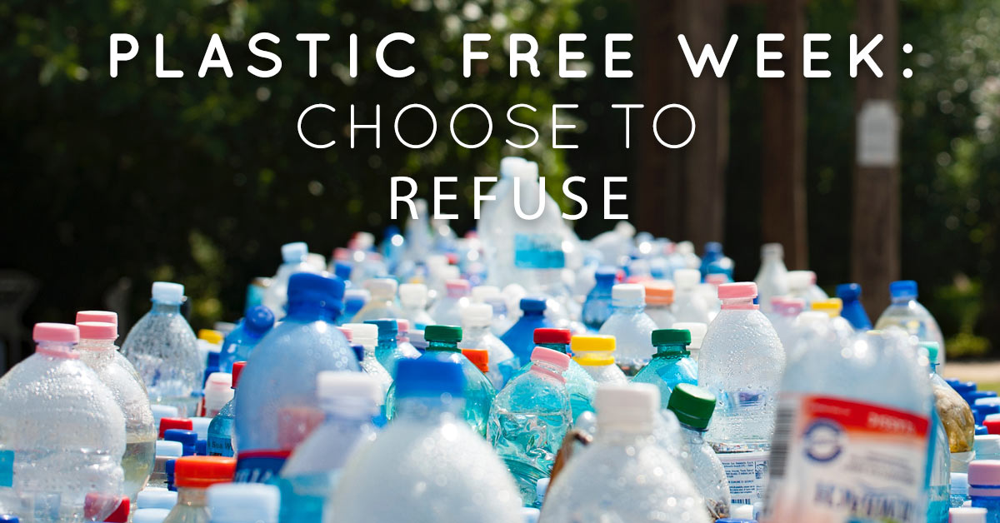
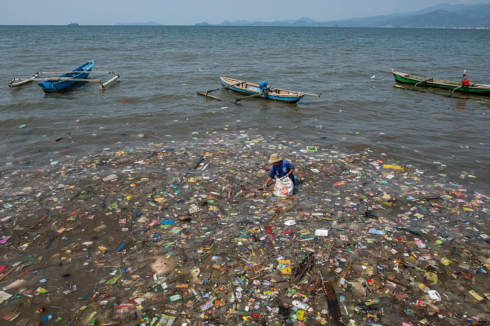
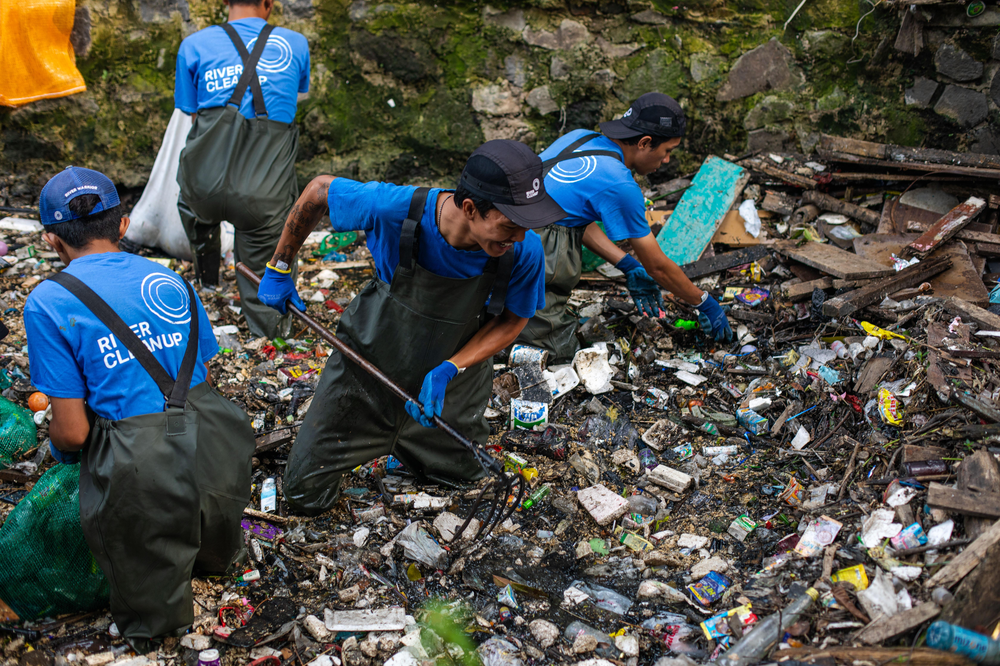
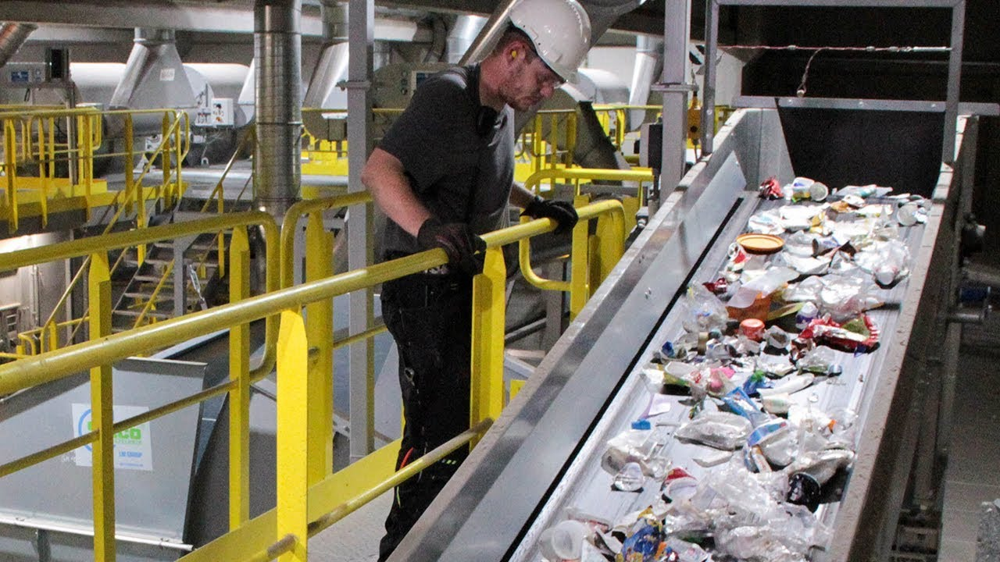
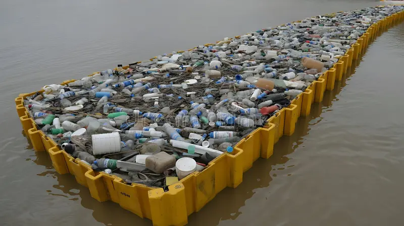
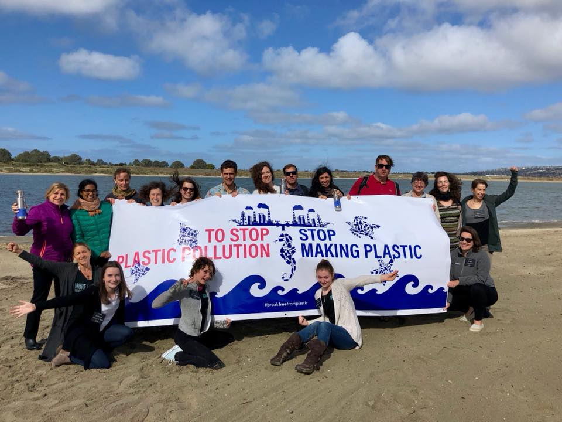
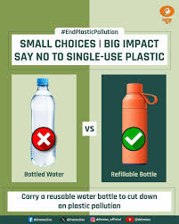

Single-use plastics are everywhere, from our streets to our oceans. Learn how to turn plastic from a problem into a solution.
Plastic pollution is the build-up of plastic waste in our rivers, lands, and oceans, where it harms animals, people, and the climate. Most plastics are made from fossil fuels and can take hundreds of years to break down into tiny microplastics that never truly disappear. By reducing, reusing, and recycling wisely, schools and communities can cut plastic waste and protect the planet for future generations.
225M tGlobal plastic waste in 2025
31.9%Plastic waste mismanaged worldwide
10M tEstimated plastic entering oceans each year
Scroll or click a card below to jump directly to topics like causes, impacts, solutions, media, feedback, and quiz.
Main Causes
Overuse of single-use plastics like bags, bottles, straws, and wrappers.
Poor waste management and littering, especially in cities and coasts.
Packaging as the biggest source of plastic waste worldwide.
Fast fashion and synthetic textiles releasing microplastics when washed.
Weak recycling systems and low awareness about proper segregation.
Solutions
Refuse single-use items: carry your own bottle, bag, and lunch box.
Replace plastic with reusable or compostable alternatives wherever possible.
Segregate waste at source into dry, wet, and recyclables for better recycling.
Support bans on unnecessary single-use plastics in schools and communities.
Organize clean-up drives and recycling campaigns with clear instructions.
How You Can Help
Carry a reusable water bottle, metal straw, and cloth bag every day.
Say “no” to extra plastic cutlery, straws, and unnecessary packaging.
Join or start a “Plastic-Free Week” challenge in your class or school.
Create posters, reels, or street plays to spread anti-plastic messages.
Encourage family and shops near you to sort waste and reduce plastic use.
Global Impact
Sea turtles, birds, and fish mistake plastic for food and can die from it.
Microplastics are now found in water, soil, air, and even human bodies.
Coastal tourism and fishing suffer when beaches and oceans are polluted.
Burning plastic releases toxic smoke and greenhouse gases.
Countries face huge costs to clean, manage, and treat plastic waste.
Daily Plastic Habits
Buy in bulk or with less packaging instead of many small plastic packets.
Store food in steel or glass containers instead of disposable boxes.
Choose pencils, notebooks, and stationery with minimal plastic.
Use refillable pens and markers rather than throw-away ones.
Prefer soaps and shampoos without microbeads or plastic glitter.
Tech & Innovation
Machines that sort, shred, and recycle plastics into new useful products.
Apps that track your plastic footprint and suggest greener choices.
New materials like bioplastics and plant-based packaging for some uses.
Floating barriers and robots that collect plastic from rivers and seas.
Data tools that map plastic hotspots to plan better clean-ups and policies.
🎬 Awareness Video
Watch this awareness video to see how plastic travels from our hands into rivers and oceans,
and how simple changes in daily life can stop that journey.
📸 Plastic Pollution Gallery

School plastic-free campaign

A beach affected by plastic waste

River clean-up drive

Sorting plastics for recycling

Collecting floating plastic from waterSimple tips to live with less plastic

Community talk on plastic alternatives

Refill, don’t buy plastic bottles
Real World Success Stories
Cities, schools, and countries around the world show that reducing plastic is possible.
With smart rules, strong awareness, and honest participation, plastic waste can drop quickly.
−80%
Plastic bag waste cut in some cities after bans and fees
100+
Countries with regulations on single-use plastics
10M t
Estimated plastic entering oceans each year we must stop
3R
Reduce, Reuse, Recycle—core actions to tackle plastic waste
1
Planet we share—every choice adds up
Test Your Knowledge — Plastic Quiz
Points: 0
Streak: 0
Leaderboard — Top Scores
Top 3 scores stored locally.
Answer explanation
💬 Share Your Ideas
Tell how this plastic pollution hub helped you or share ideas to make your school, home, and city use less plastic and manage waste better.
Why your ideas matter
Help improve activities and content for school awareness programs.
Inspire new clean-up drives and low-plastic challenges.
Show what plastic topics and solutions you want to explore next.
Your choice = less plastic
One student carrying a bottle or refusing a straw may look small, but if a whole school follows, thousands of plastic items stay out of nature.